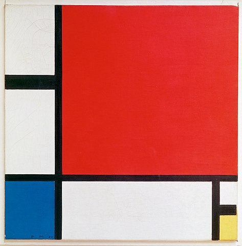

Art Personality Test Result
Openness / Offenheit / Nyitottság
Conscientiousness / Gewissenhaftigkeit / Lelkiismeretesség
Extroversion / Extraversion / Extravertáltság
Agreeableness / Verträglichkeit / Barátságosság

Neuroticism / Neurotizismus / Neuroticizmus